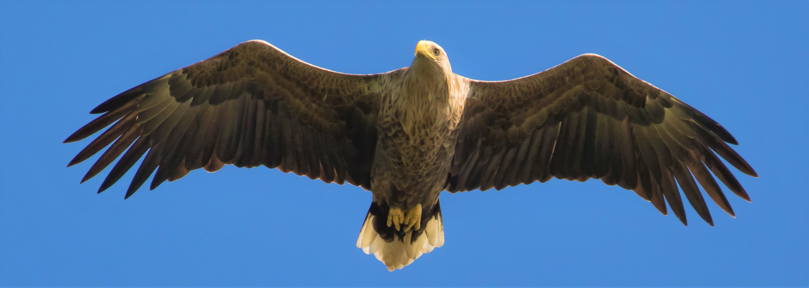

Met een oppervlakte van 9000 hectare één van de grootste en
waardevolle wildernissen van ons land. Daarnaast is de Biesbosch één van
de weinige nog bestaande zoetwatergetijdengebieden in Europa
Voor mij 1 van mijn favoriete gebieden vanwege de herinneringen die ik
als beginnende fotograaf hier beleefd heb.Iets wat ik iedereen gun.
Je ziet ineens andere vogelsoorten.Je hoort geknetter uit het riet en
denkt wat is dat voor iets? Als beginnende vogelspotter herken je nog
helemaal geen geluiden,maar dat geeft niks want dat maakt het extra
spannend!De biesbosch staat vaak bekend vanwege het spotten vanuit de
auto maar ik zou zeker zeggen:Loop het zvm & laat je verrassen!
De foto hierboven is mijn favoriet.De zeearend was eigenlijk steeds een
voorbijgaande gast in de biesbosch.Tot het jaar dat er 1 besloot te blijven
en te nesten.Het jaar erop was het dan eindelijk zeker: De zeearend was in
Nederland en vond de Biesbosch definitief een goede plek om zich te
nestelen.De krant berichtte weleens,de boswachter vertelde mooie
verhalen op de radio maar ik had nog van niemand een mooie foto gezien
laat staan dat er nog echt reclame werd gemaakt voor de nieuwe
bewoner.In mijn ogen was de zeearend iets wat je alleen in Amerika zag
ofzo en hij/zij verdiende dit toch!? Misschien gaat hij na dit jaar weer weg
en heb ik nooit meer de kans om deze “vliegende deur” te zien! Dus wij
gingen op pad,geen idee waar te zoeken nog en nog geen enkele
ervaring,gewoon op goed geluk,dag in dag uit. Het was ook niet echt
bemoedigend om te weten dat deze vogel 2x met zijn vleugels hoefde te
wapperen om aan de overkant te komen.Bij de "De
Tongplaat " vonden we een
vogelhut.Een mooi plekje om te vertoeven in de wetenschap dat je
omringd wordt met andere vogels dus dan is het “niet helemaal voor
niks”.Elke dag kwamen we vogelaars tegen met mooie verhalen,boekjes
die alles wisten.Wij knikten maar verlegen en keken afentoe naar
boven.Bij elke ganzenkreet schrokken we!!(nog niet wetende dat ganzen
heel dramatisch zijn al om het minste geringste) Na dag 15 ..om 16:45 en
moe wilden we weer inpakken tot hij daar ineens vloog. Recht bovens
ons..een paar meter maar..Ik pakte mijn camera en bleef maar op de knop
drukken.Hij was zo dichtbij dat ik niet eens meer kon inzoomen of tijd had.
Mijn vriendin kon met haar eigen ogen deze mooie vogel tot in detail zien.
Hij was het echt..DE zeearend in Nederland en WIJ hadden hem gezien.
Met een hele grote glimlach en met misschien een beetje gemene
gedachte dat uitgerekend WIJ,de noobs hier in de omgeving,hem hadden
gespot ☺ EN ook nog eens een foto ervan..liepen we stilzwijgend terug.
We hebben deze foto uitvergroot hangen in de woonkamer.
Fun fact: En zelfs hierna waren wij te onzeker om de foto te delen. Tot nu
☺
En DAT is de Biesbosch. Een gebied vol verassingen en geluk
hebben. --- Zie je ineens de
blauwborst,ijsvogel,tapuit (zie foto hieronder) of een velduil of zelfs de visarend? Het KAN.
En daarom zeg ik..
Loop een gebied af en geniet van de zilte lucht en het vakantiegevoel.
Of je dan verrast wordt of niet..Je hebt iedergeval een heerlijke dag.